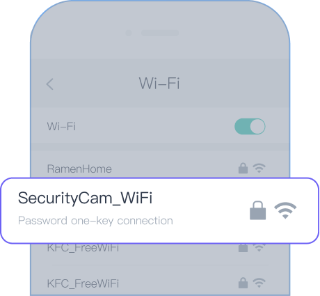

1. Please examine the device's power and LED indicator to make sure that it is ready to pair. Reset the camera if the LED indicator is not flashing red. When resetting the camera, please hold the reset button until you hear a sound and then wait for approximately 15 seconds until the LED indicator flashes red.
2. Please make sure you select the right product model to pair in the app.
3. Please check your network connection, Wi-Fi router and connection speed.
4. Please make sure that the Wi-Fi password is correct.
5. Please make sure that the network chosen is 2.4G. The Wi-Fi name should contain English characters and numbers only.

6. Please keep your device, phone, and router as close to each other as possible.
7. Please make sure that your Wi-Fi is not in hidden mode. The Wi-Fi broadcast function needs to be on during pairing.
8. Please check the encryption method of your router's settings. It should be WPA2-PSK, and the authentication type AES. Both can be set to automatic.
9. If wireless MAC address filtering is enabled in your router's settings, remove the device from the router's MAC filtering list in order to connect.
10. Your router may have reached the maximum number of simultaneous connections allowed; please turn off other devices on the network before trying to connect your Osaio device.
11. If your phone has VPN, please turn it off when pairing.
12. If you have two phones, you can use one of your phone's hotspot to pair to examine whether you're experiencing a network issue or a camera issue.
If the problem persists, please send us a detailed message under Help section in the app, or contact us at app-support@osaio.net